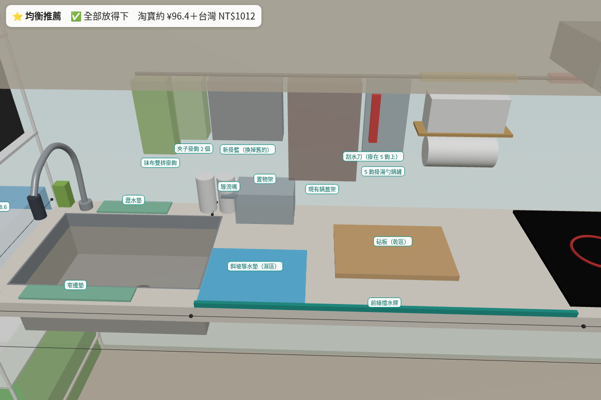
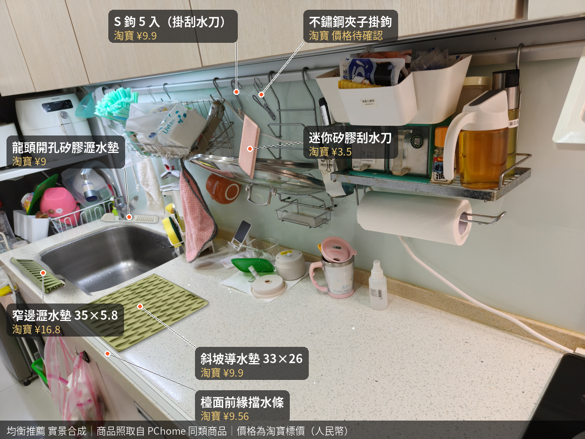
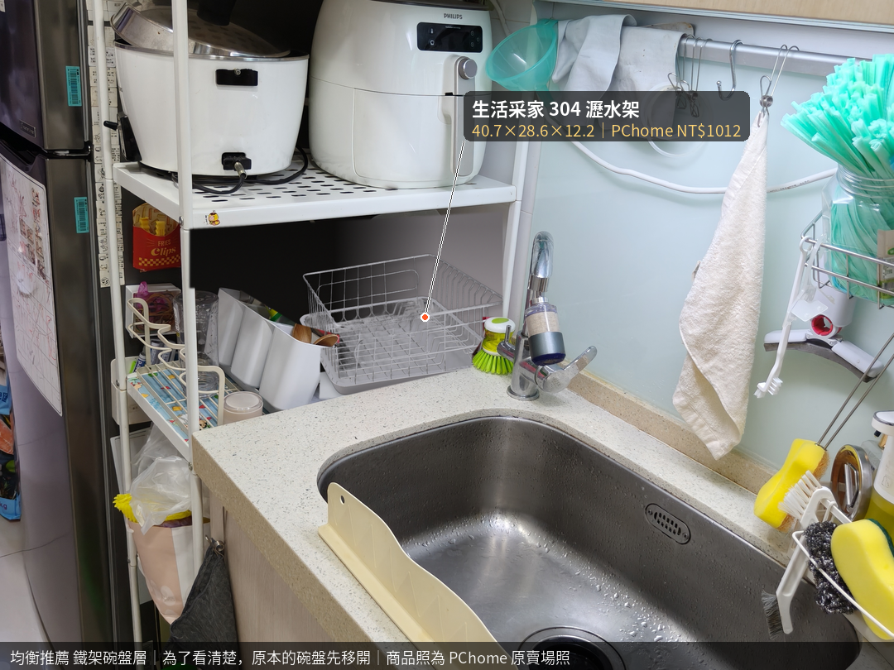
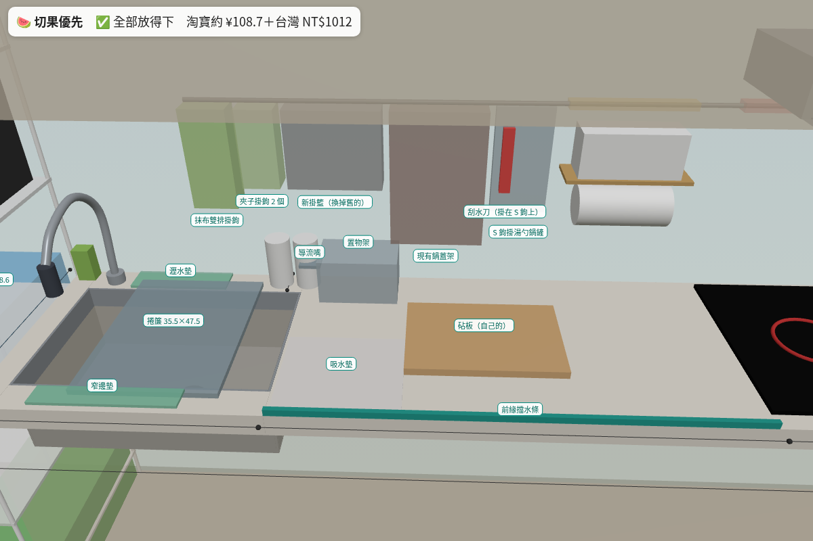
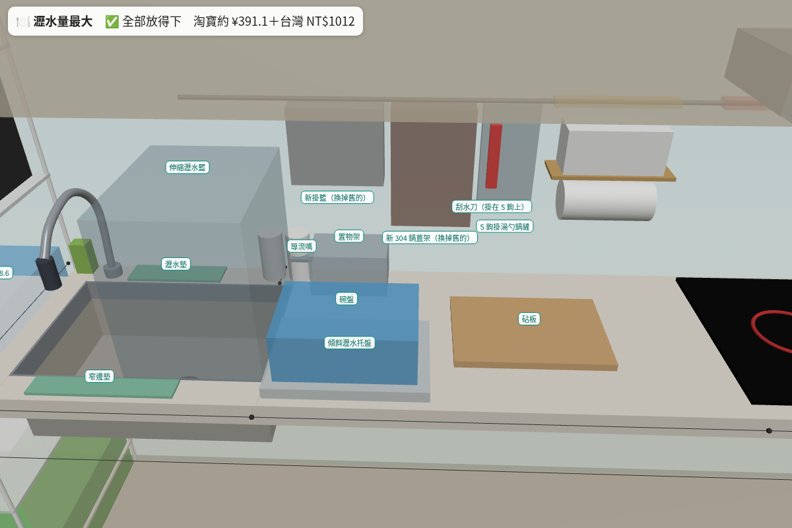
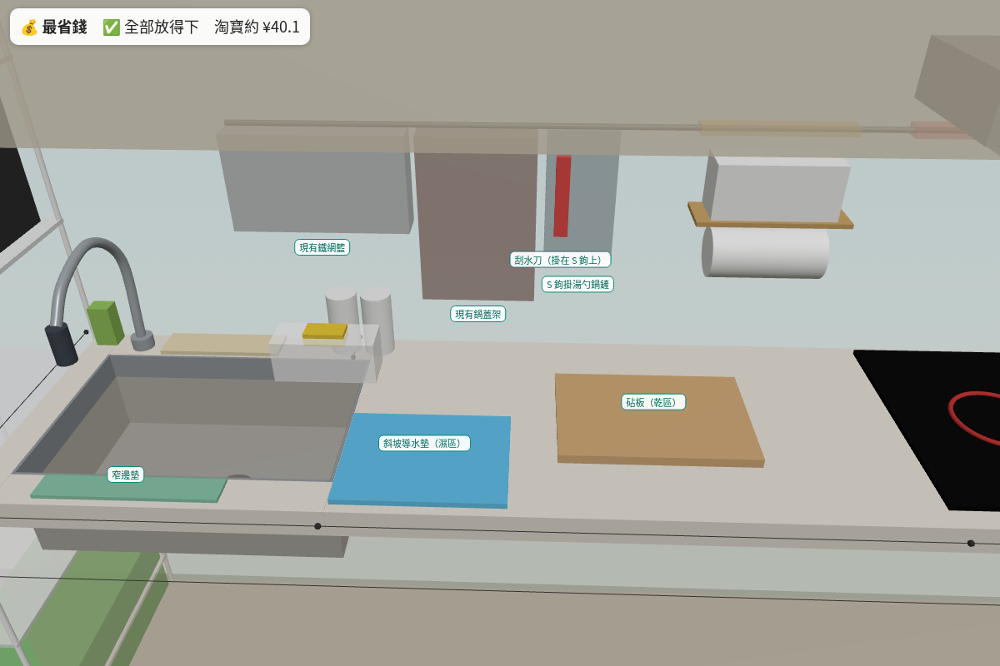
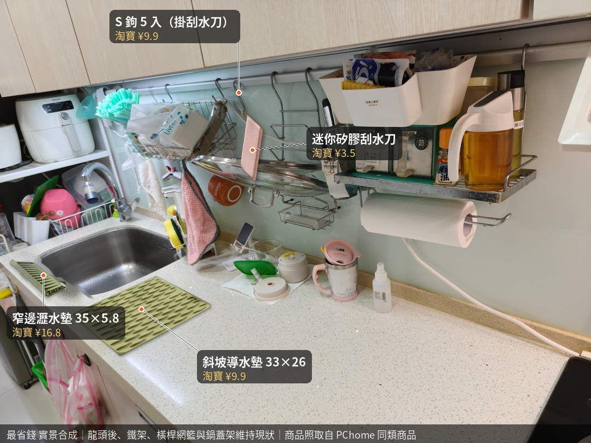
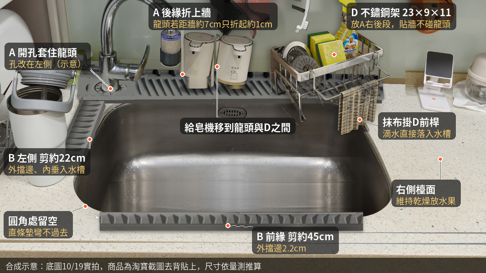
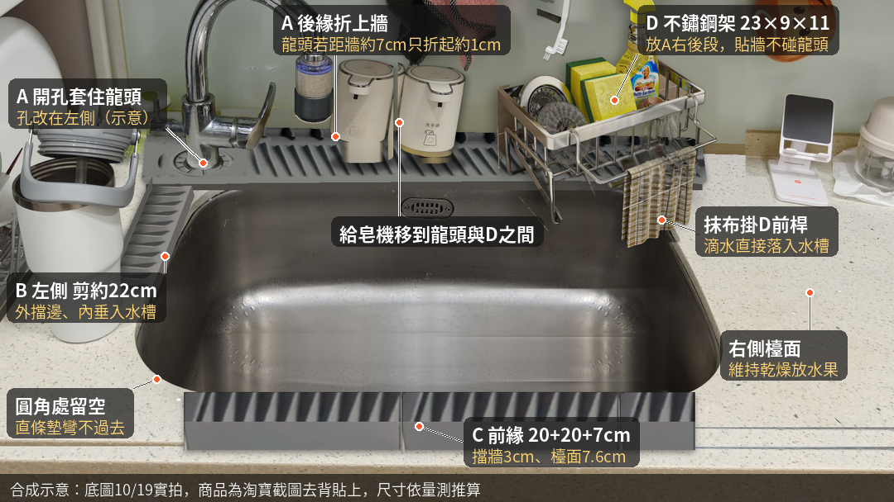
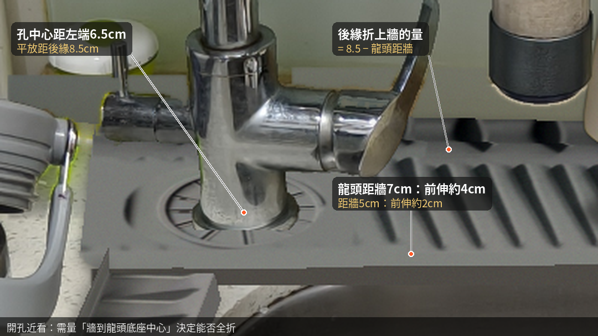

🧊 3D 模型（整個廚房，手指拖曳旋轉、兩指縮放）
標籤顏色：實測 照片判讀不確定 估算 待量測；8 紅色號碼和紅色箭頭＝還要量的地方（號碼對照下面清單）；藍色半透明＝建議的瀝水架。座標：左右從檯面左端（鐵架右側）算、前後從牆算。2026-10-24 用主人 10/24 拍的 33 張捲尺照片和主人直接回報的數字更新：水槽前後深 42、水槽到爐台 114、檯面總長 272、地板到檯面 88、鐵架深 60、鐵架五層層板離地 11.5／48.5／83.5／119／155、吊櫃 深 37 高 67.8、爐台前緣 4.5、抽油煙機 寬 79 深 36 離檯面 60、橫桿 高 54 長 190 左端 42、調味架 高 36 寬 32、龍頭 高 32、牆到出水口 34 都是實測；冰箱先不量。實測＝捲尺兩端和讀數都看得清楚或主人直接量；照片判讀不確定＝看得到捲尺但起點或對位不清楚；估算＝沒有捲尺只靠比例。
🧪 配置模擬器（選好配件，3D 跟著變）
先按一個組合看看，再自己改下面的選項。3D 在上面，改完往上滑就看得到。綠色是放得下、黃色要注意、紅色是放不下（會寫原因）。
可用 42 到 140；140 到 172 下面是調味架，只能掛很薄的；183 到 232 在爐台正上方，不掛東西。
🛒 下單清單（跟著上面選項自動更新）
淘寶商品頁要登入才打得開，小祕書沒有登入，所以淘寶價格都是搜尋結果上顯示的價格，買之前請在 App 裡再看一次規格和價格。
💡 水槽右邊檯面怎麼放（推薦：濕乾分區）
水槽右邊有 114 cm（69 到 183）。你想留一塊切水果，又怕水到處流。推薦把它分成三段：
- 濕區 33 cm（緊貼水槽）：放斜坡導水墊 33×26，低的那邊朝水槽。洗好的水果、杯子先放這裡，水自己流回水槽。
- 乾區 60 cm 以上：放砧板切水果，砧板下墊止滑墊。切完用刮水刀一刮，把水推到濕區。
- 靠爐台留 8 cm 以上空著：不要讓砧板貼著爐台。
「四面沒封起來」怎麼辦：後面靠牆、左邊是水槽，會漏水的是前緣。貼一條自黏矽膠擋水條（約 ¥10），水就不會滴到地上；右邊靠爐台那段原本就有爐台擋住。刮水刀掛在水槽上方的橫桿，隨手拿得到。
取捨：
- 👍 乾區夠大、濕的東西都集中在水槽旁邊、花費約 ¥25。
- 👎 乾區少了 33 cm；導水墊一週要洗一次，不然會黏。
- 如果你常一次洗很多碗，改用「切果優先」：水槽上放捲簾瀝水架，右邊檯面整片留空。
🖼️ 組合成品圖（點「套用」會帶到模擬器）
⭐ 均衡推薦

優點- 切水果有一塊 40 cm 以上的乾區，濕的東西都在靠水槽那 33 cm
- 前緣貼擋水條，水不會流到地上；刮水刀掛在水槽上方順手
- 碗盤大部分放鐵架瀝水架，檯面不被佔
- 一次洗很多碗時，濕區只放得下約 4 件，其餘要拿去鐵架
- 右後角置物架尺寸賣場沒寫，要先問
📷 實景預覽（用你家的照片合成，商品照取自 PChome 同類商品，不是淘寶原圖）


🍉 切果優先

優點- 右邊 114 cm 整片空著，只放砧板
- 碗盤滴水在水槽上方的捲簾，不碰檯面
- 捲簾不用時捲起來，水槽又是完整的
- 捲簾只放得下約 5 件小碗杯
- 洗好的水果要放吸水墊晾
- 右後角置物架尺寸賣場沒寫，要先問
📷 實景預覽：這個組合還沒做實景圖（要用到的捲簾瀝水架、伸縮瀝水籃還沒找到角度合適的商品照），先看上面的成品圖。
🍽️ 瀝水量最大

優點- 水槽上、檯面、鐵架三個地方都能瀝水，約 30 件
- 大鍋也放得進伸縮籃
- 伸縮籃擋住水槽右半邊，洗大鍋不方便
- 切水果的乾區縮到約 60 cm，而且前半段被托盤佔走
- 最貴（MUJI 托盤淘寶代購很貴，台灣門市買比較省）
📷 實景預覽：這個組合還沒做實景圖（要用到的捲簾瀝水架、伸縮瀝水籃還沒找到角度合適的商品照），先看上面的成品圖。
💰 最省錢

優點- 只買 4 樣，人民幣約 40 元
- 窄邊墊和斜坡墊都把水導回水槽
- 橫桿上原本的鐵網籃和鍋蓋架照用，只加 S 鉤
- 鐵架不換瀝水架，碗盤量不變
- 前緣沒擋水條，切水果的水要靠刮水刀
📷 實景預覽（用你家的照片合成，商品照取自 PChome 同類商品，不是淘寶原圖）

🅴 最小策略
這個選項沒有成品圖，按下面「套用」看 3D，或看下面「🅴 選項 E 最小策略」區。
優點- 只買 2 樣斜坡墊加 1 支刮水刀，最便宜
- 只處理最難刮的龍頭那一塊，水順著坡流回水槽
- 其餘檯面維持原樣，靠刮水刀自己刮，右邊切水果區保持乾燥
- 水槽前面和左前圓角沒圍，水會濺到檯面，要自己刮
- 後段只有約 9 cm 寬，坡度有限，排水效果要看實際斜度
- 開孔要對準龍頭，牆到龍頭中心還沒量；左孔款要問賣家
🅴 選項 E 最小策略（10/27 你決定的：只做龍頭那塊 L 形）
待量測 今晚 2026-10-27 20:30 量
- 待量測 牆面到水龍頭底座中心距離：還沒有實測值。決定 A 靠牆折起多少、開孔對不對得上。
- 待量測 水龍頭底座直徑：約 4.6 cm 是照片估計值，不是實測。孔要比它大才套得進。
- 待量測 （順便量）水槽左邊直段長度（牆到左前圓角開始）：決定 B 剪多長，目前用約 30 cm 推算。
問賣家 下單前問淘寶客服
- 問賣家 A（65×14.5 側孔加長款）有沒有孔在左邊的款？孔中心離一端、離靠牆那邊各幾 cm？孔徑多大？可以剪嗎？
- 問賣家 A 是平的折邊墊還是斜坡款？坡度幾度？牆到水槽後緣只有 9 cm 能不能用？
- 問賣家 B（50×6 摺邊窄款）是不是平放 4.5＋折 2.5？剪短後吸盤夠不夠？
- 問賣家 兩片在左後角要怎麼接才不漏水？
只在有水龍頭的整個左上角 L 形鋪斜坡瀝水墊（淘寶「潑水自動滑落坡」那類），水順著坡流回水槽：
- 後段：水槽後面，水龍頭那側，牆到水槽後緣的檯面約 9 cm 那條。
- 左段：水槽左邊那條檯面。
- 其餘不放墊：水槽前面、左前圓角、右側切水果區，用刮水刀自己刮。
- 水槽右側檯面維持乾燥，保留切水果空間；刮水刀必買。
上面的配置模擬器按「🅴 最小策略」就看得到 3D：綠色是斜坡墊，藍色箭頭是水流方向，橘色是還要刮水的區域。
📏 尺寸
| 項目 | 數值（cm） | 狀態 |
|---|---|---|
| 檯面全長 | 272 | 實測 |
| 檯面高 | 88 | 實測 |
| 水槽寬 | 62.5 | 實測 |
| 水槽深（前後） | 42 | 實測 |
| 牆到水槽後緣檯面 | 約 9 | 實測 |
| 水槽左邊白色鐵架深 | 60 | 實測 |
| 牆面到水龍頭底座中心 | （未量） | 待量測 今晚 20:30 |
| 水龍頭底座直徑 | 約 4.6（估計值） | 待量測 今晚 20:30 |
🧩 你截圖的 A、B 能不能用
- A 當 L 形後段：可以當候選，量好再定稿。長 65 比水槽寬 62.5 多 2.5，左端對齊水槽左緣，右端壓在右邊檯面上；折起後 65×11，比後段 9 cm 多約 2 cm 垂進水槽 推論。孔中心離一端約 6.5，照片估龍頭中心離水槽左緣約 7，接近 推論；但商品圖的孔在右邊 問賣家，靠牆折起多少要看牆到龍頭中心 待量測。A 看起來是折邊墊，有沒有斜坡 問賣家。
- B 當 L 形左段：放得下。左邊檯面約 6.5，B 平放 4.5＋往水槽折 2.5；從牆剪到左前圓角，約 30 cm 推論，實際長度 待量測。
👍 優點
- 便宜：只買 2 片墊子和 1 支刮水刀。
- 淘寶買少量就好，運費和等貨都少。
- 龍頭根部最難刮的那塊交給斜坡，其餘靠刮水刀，檯面不會被墊子佔走。
⚠️ 缺點與風險
- 水槽前面和左邊前段沒圍起來，水可能濺到檯面，要自己刮。
- 斜坡墊與開孔要對準水龍頭位置，牆到龍頭中心還沒量 待量測。
- 左孔版本要問賣家 問賣家；沒有左孔款就要換商品。
- 後段只有約 9 cm 寬，坡度有限，排水效果看實際斜度 問賣家。
🛒 要買的清單
| 品名 | 規格 | 數量 | 價格 |
|---|---|---|---|
| 斜坡瀝水墊 L 形後段（A 側孔加長龍頭墊，或同類左孔斜坡款） | 平鋪 65×14.5、折起 65×11、厚 2；孔中心離一端約 6.5 | 1 | 淘寶價格待確認 |
| 斜坡瀝水墊 L 形左段（B 折邊窄邊瀝水墊 50×6） | 平放 4.5＋折 2.5、長 50，剪約 30 | 1 | 淘寶價格待確認 |
| 刮水刀（必買） 迷你矽膠刮水刀（有掛孔），掛橫桿 S 鉤 | 迷你款 | 1 | 淘寶價格待確認 10/24 搜尋結果顯示 ¥3.5 |
預估合計約 ¥24 到 ¥61（約 NT$115 到 NT$296，1 人民幣 ≈ 4.9 台幣，不含運費）推論：2 片墊子用下面同類斜坡墊的搜尋價 ¥9.8 到 ¥28.5 一片估，實際 淘寶價格待確認。
🔎 淘寶斜坡款參考（2026-10-27 公開頁面，沒有登入、沒加購物車）
- 有來源 風和大海「硅胶水龙头防溅水垫沥水置物垫」：規格有「新升级斜坡款 65x15x1.8」「窄款专拍 61cm 中开孔（7 到 10cm 台缝可用）」「左右侧孔通用 65cm（大于 11cm 台缝可用）」。頁面顯示 ¥5.8 是擋水圈規格的價格，墊子本身 淘寶價格待確認。側孔款寫要大於 11 cm，你家後段 9 cm 不合；窄款合但孔在中間 推論。商品頁 ↗
- 有來源 「水龙头可折边硅胶沥水垫水槽防积水斜坡排水垫」：顯示 ¥28.5（約 NT$140），規格「升级带挡板窄款 61x10 中间开孔」，淘寶價格待確認。商品頁 ↗
- 有來源 台灣參考：E.dot 水龍頭傾斜瀝水矽膠墊 特大號 45×14×1.7，標 5 度斜坡，PChome NT$299（10/27 頁面）。寬 14 比 9 cm 寬，只參考坡度 推論。商品頁 ↗
💡 更好的建議／備案
- 迷你窄頭矽膠刮板，專刮水龍頭根部周圍的小縫 推論
參考：舞水痕 小輕新百用刮刷（3 合 1 縫隙清潔、迷你刮水刀，台灣製），momo 促銷價 NT$70（10/22 到 10/24 活動價，現價待確認）有來源 商品頁 ↗ - 水龍頭根部與牆面交界用矽利康收邊，或加矽膠擋水條，避免水滲到後方 推論
參考：M083 中性防霉矽利康 300ml（透明／白／象牙白），PChome 搜尋頁折後 NT$210、商品頁 NT$248 有來源 商品頁 ↗；擋水條可用本頁清單的「檯面前緣擋水條（自黏矽膠，可彎）」淘寶 10/24 搜尋價 ¥9.56 有來源 商品頁 ↗，淘寶價格待確認 - 後段只有約 9 cm 寬，斜度有限 推論：以 5 度斜坡算，9 cm 寬高低差只有約 0.8 cm，水流得慢、容易留水珠；出水效果取決於實際坡度，下單前問清楚 問賣家。
- 備案：不鋪墊，只在水龍頭根部放珪藻土吸水墊，每天拿起來晾乾。缺點：不會排水，吸飽了要晾，不適合一直有水 推論
參考：上手家居 可剪裁水龍頭吸水墊（矽藻土，37.5×13.5，可剪），PChome NT$99（10/27 頁面）有來源 商品頁 ↗
標籤說明：待量測 要你量；問賣家 下單前問客服；推論 小祕書推算，沒有商品頁或實測證明；有來源 有公開商品頁。價格都可能變動，下單前在 App 再看一次。
🧩 三邊圍瀝水墊（10/24 新增，照你畫的圍法）
你想要的是：水槽後面（龍頭那邊）、左邊、前面都用「折邊矽膠墊」圍起來，折邊垂進水槽，水自己流回去；右邊檯面維持乾的放水果。這個組合還沒接進上面的 3D 模擬器，先看實景圖和清單。
・A 平鋪 65×14.5，靠牆那邊折起來後是 65×11。孔中心離一端約 6.5 cm，平鋪時離靠牆那邊約 8.5 cm。
・孔套進龍頭後，靠牆折起來的長度 = 8.5 − 龍頭離牆的距離。龍頭離牆 5 cm：折起 3.5 cm，檯面上 11 cm，比龍頭後面的 9 cm 多出約 2 cm，剛好垂進水槽。照片看起來龍頭可能離牆 7 cm 左右：那就只折起約 1 cm，前面多伸進水槽約 4 cm，還是能用，只是牆邊擋水變矮。
・水槽寬 62.5，A 長 65：左端對齊水槽左邊，右邊多出約 2.5 cm 壓在右邊檯面上，不影響。
・孔要在左邊（龍頭在水槽左後方）。商品圖的孔在右邊，要問客服有沒有左孔款，或整片翻過來用行不行。實景圖是把孔移到左邊示意的。
・買之前請量 2 個數字：牆到龍頭底座中心的距離、龍頭底座的直徑（照片估約 4.6 cm，孔要比它大）。
・如果對不上，用這個規格找：左側開孔、孔中心離左端 6.5 到 7 cm、離牆約 5 cm（或你量到的數字）、折起後深 11 cm 以內、長 65 cm 以內，孔最好是長條形可以前後調。
📷 實景預覽（用你家 10/19 的照片合成，商品照取自淘寶截圖去背，位置照量到的尺寸推算，不是真的裝上去拍的）



每一邊怎麼放
- 後面（A）：見上面重點。
- 左邊（B 窄邊墊 50×6）：左邊檯面只有 6.5 cm，B 平放 4.5 cm＋往水槽折 2.5 cm，放得下。水槽左邊直的那段約 22 cm（從 A 前緣到前面圓角開始），B 剪成約 22 cm。
- 前面：組合一用第二條 B，剪約 45 cm，外側 2.2 cm 擋邊擋住往地上流的水；組合二用 C 直邊墊（檯面 7.6 cm、靠外擋 3 cm），前緣到檯邊只有 8 cm，剛好鋪滿，比較擋得住，但比較寬。
- 前左圓角：直條墊彎不過去，這一小段會留空，要剪斜角拼才蓋得住。
- 右邊：不圍，維持乾區放水果；只有 A 多出的 2.5 cm 和 D（組合一）在右後角。
不鏽鋼置物架 D（23×9×11，前面有 16 cm 抹布桿，附瀝水盤）放哪裡
- 放法一（實景圖）：放在 A 上面、龍頭右邊靠牆，深 9 cm 剛好是龍頭後面的寬度，離龍頭 15 cm 以上不會碰到。抹布掛前面的桿子，滴水直接落進水槽。給皂機移到龍頭和 D 中間。
- 放法二：放水槽右邊檯面、轉 90 度靠牆，抹布桿朝水槽。缺點是水果區少約 9 cm，抹布滴水落在檯面上（沒做實景圖）。
- 順序：海綿、鋼絲球放 D 裡面，洗碗精放 D 右邊格；抹布用完擰乾掛前桿。D 底下的瀝水盤坐在 A 上，A 的溝把水帶回水槽。
🛒 下單清單（淘寶價格待確認）
| 品名 | 規格 | 組合一 | 組合二 | 價格 |
|---|---|---|---|---|
| A 側孔加長龍頭墊 【側孔加長款】65×14.5 灰色，送擋水圈 | 平鋪 65×14.5、折起 65×11、厚 2 | 1 | 1 | 待確認 |
| B 折邊窄邊瀝水墊 灰色 窄寬 50×6，底部吸盤 | 平放 4.5＋折 2.5、長 50，可剪 | 2 | 1 | 待確認 |
| C 轉角＋直邊墊四件套 灰色 4 件套，1 轉角＋3 直邊（風和大海） | 直邊每片 20、檯面 7.6、擋邊 3 | 0 | 1 套 | 待確認 |
| D 不鏽鋼水槽置物架 銀色 附瀝水籃（瀝水籃＋抹布桿） | 23×9×11，抹布桿 16 | 1 | 1 | 待確認 |
淘寶搜尋關鍵字：A「侧孔 加长 龙头垫 65 折边」、B「折边 窄边 沥水垫 50x6」、C「转角垫 直边垫 硅胶 4件套 风和大海」、D「不锈钢 水槽 置物架 抹布杆 沥水」。
買之前問客服：
- A 有沒有孔在左邊的款？孔中心離一端、離靠牆那邊各幾 cm？孔多大，套得進約 4.6 cm 的龍頭底座嗎？折線是固定的嗎？可以剪嗎？
- B 的 50×6 是不是平放 4.5＋折 2.5 那款？剪短後吸盤還夠嗎？
- C 的直邊墊可以單買嗎？
- D 的抹布桿拆得下來嗎？瀝水盤多大，有沒有出水口？
實景圖哪裡不準：水槽裡面、右後牆角是用旁邊的畫面補的，細看有接縫；A 的孔是把商品圖左右翻過來；給皂機底部被原本的東西擋住，是往下補畫的；D 底下的瀝水盤看不到，籃子裡的東西是商品照原本的；前面的墊子看起來偏平；角度是估的；底圖是 10/19 拍的。
📋 淘寶下單總表（全部候選）
淘寶頁面要登入才打得開，小祕書沒有登入，所以下面「有價格」的是搜尋結果上顯示的價格，不是打開商品頁核實的。到 App 打開連結，或用關鍵字搜，再對一次尺寸。材質優先選 304 不鏽鋼。
✅ 找到商品頁，也有價格（10 樣）
| 品名 | 淘寶關鍵字（簡體） | 規格／材質／數量 | 價格 | 連結 |
|---|---|---|---|---|
| 龍頭開孔矽膠瀝水墊（風和大海旗艦店） 深度賣場沒寫，收到先量；超過 9 會翹起來 | 水龙头 侧孔 硅胶 沥水垫 窄边 | 深 ≤ 9（龍頭後面只剩 9）、長 ≤ 40、要有龍頭開孔 食品級矽膠・數量 1 | ¥9 淘寶（10/20 標示價） | 商品頁 ↗ |
| 窄邊瀝水墊 35×5.8（匠心優品） 5.8 深，放得下 | 水槽 窄边 沥水垫 35cm 斜坡 | 深 ≤ 8（水槽前面只剩 8） 矽膠・數量 1 | ¥16.8 淘寶（10/20 標示價） | 商品頁 ↗ |
| 帶導流嘴的海綿洗碗精架（優勤） 賣場沒寫尺寸，下單前先問客服長寬 | 水槽 置物架 导流嘴 304 海绵 抹布 窄款 | 寬 ≤ 23、深 ≤ 14、導流嘴朝左伸進水槽 304 不鏽鋼・數量 1 | ¥37.7 淘寶（10/20 標示價） | 商品頁 ↗ |
| 斜坡導水墊 33×26×1 洗好的水果、杯子先放這，水自己流回水槽 | 厨房 台面 导流 斜坡 沥水垫 33*26 | 長 ≤ 40、深 ≤ 28、斜坡低的那邊朝水槽 頁面沒寫（挑食品級矽膠）・數量 1 | ¥9.9 淘寶（搜尋結果顯示價） | 商品頁 ↗ |
| MUJI 不鏽鋼傾斜瀝水托盤 39.5×27.5×3 淘寶是日本代購價，台灣無印良品門市通常比較便宜（台灣價沒查） 🇹🇼 台灣：台灣無印良品門市或官網 | 无印良品 不锈钢 沥水 倾斜 托盘 | 長 ≤ 40、深 ≤ 30、出水邊朝水槽 不鏽鋼・數量 1 | ¥233 淘寶日本代購（搜尋結果顯示價） | 商品頁 ↗ |
| 檯面前緣擋水條（自黏矽膠，可彎） 把右邊檯面前緣「封起來」，水不會滴到地上；貼之前擦乾，用吹風機吹熱背膠 | 厨房 台面 挡水条 硅胶 自粘 可弯曲 | 長度選 120（貼 69 到 183 前緣 114，多留裁切），高 1.5 到 2 實心矽膠・數量 1 | ¥9.56 淘寶（搜尋結果顯示價） | 商品頁 ↗ |
| 迷你矽膠刮水刀（有掛孔） 切完一刮，把水推進濕區或水槽；台灣大創、無印也買得到 🇹🇼 台灣：大創、無印良品 | 迷你 台面 刮水板 硅胶 可挂 | 刮條寬 15 到 25、柄上有掛孔可掛橫桿 矽膠＋塑膠柄・數量 1 | ¥3.5 淘寶（搜尋結果顯示價） | 商品頁 ↗ |
| 304 捲簾瀝水架 大號 18 桿 35.5×47.5（陶市） 不用時捲起來收；台灣 PChome 亞伽 47×30 NT$428 🇹🇼 台灣：PChome 亞伽 47×30 NT$428 https://24h.pchome.com.tw/prod/DQAUG0-A900KDQZU | 304 不锈钢 卷帘 沥水架 47.5 | 長 44 到 50（水槽前後 42，兩端各搭 1 cm 以上）、寬 ≤ 36 304 不鏽鋼＋矽膠・數量 1 | ¥22.22 淘寶（搜尋結果顯示價） | 商品頁 ↗ |
| 水槽上伸縮瀝水籃 304 大號（吉度） 放水槽右半邊，洗碗時右半邊會被擋住 | 水槽 伸缩 沥水篮 304 可调节 | 適用水槽寬 25.8 到 42.5（我們前後 42，剛好在上限）、高 43.3 < 橫桿 54 304 不鏽鋼・數量 1 | ¥81.2 淘寶（搜尋結果顯示價） | 商品頁 ↗ |
| 304 扁料 S 鉤 5 入（沐爵 MJ-4513） 同賣場也有依管徑 10 到 25 mm 的套管鉤，要先量橫桿 | 304 不锈钢 S钩 加粗 加大开口 | 鉤口開口 ≥ 3.5（橫桿照片估約 2.8 粗，待量 15） 304 不鏽鋼・數量 1 | ¥9.9 淘寶（搜尋結果顯示價） | 商品頁 ↗ |
🔗 找到商品頁，價格要登入才看得到（5 樣）
| 品名 | 淘寶關鍵字（簡體） | 規格／材質／數量 | 價格 | 連結 |
|---|---|---|---|---|
| 硅藻泥吸水墊 放在乾區旁邊，洗好的水果先放上面吸乾 | 硅藻泥 吸水垫 厨房 台面 | 長 ≤ 40、深 ≤ 30 硅藻土・數量 1 | 要登入才看得到 淘寶（價格要登入才看得到） | 商品頁 ↗ |
| 不鏽鋼夾子掛鉤（霜山） 夾抹布、夾菜瓜布，滴水落在水槽上方 | 不锈钢 夹子 带挂钩 厨房 抹布 | 掛鉤口 ≥ 3.5 不鏽鋼・數量 2 | 要登入才看得到 淘寶（價格要登入才看得到） | 商品頁 ↗ |
| 抹布雙排掛鉤（霜山） 一次掛兩條抹布不疊在一起，乾得快 | 横杆 挂钩 双排 抹布 不锈钢 | 掛鉤口 ≥ 3.5、寬 ≤ 15 不鏽鋼・數量 1 | 要登入才看得到 淘寶（搜尋摘要約 ¥12／2 個，未核實） | 商品頁 ↗ |
| 掛桿用不鏽鋼掛籃／刀架／筷籠／砧板架配件 同一賣場可選掛籃、刀架、筷籠、砧板架 | 挂杆 配件 不锈钢 挂篮 刀架 筷笼 砧板架 | 掛鉤口 ≥ 3.5、籃寬 ≤ 25 不鏽鋼・數量 1 | 要登入才看得到 淘寶（價格要登入才看得到） | 商品頁 ↗ |
| VIBORG 域堡 304 掛桿配件（鍋蓋架 OS-6112A、刀架、筷子筒） 掛鉤太小就掛不上去 | 域堡 304 挂杆 锅盖架 刀架 筷子筒 | 這系列是配 19 mm 圓管，我們的橫桿約 2.8 粗（估），量好 15 再買 304 不鏽鋼・數量 1 | 要登入才看得到 淘寶（頁面最低標價 ¥5.7 是別的款式） | 商品頁 ↗ |
🔎 只有關鍵字（2 樣，沒找到可以確定的商品頁）
| 品名 | 淘寶關鍵字（簡體） | 規格／材質／數量 | 價格 | 連結 |
|---|---|---|---|---|
| 橫桿專用套管掛鉤（照橫桿粗細挑） 量好 15 再買；掛起來不會滑動、不會掉。沒找到可以確定尺寸的單一商品頁，先給關鍵字 | 横杆 套管 挂钩 304 不锈钢 管径 | 管徑選比量到的橫桿粗 1 到 2 mm；賣場常見 10／12／16／19／25 mm 304 不鏽鋼・數量 看要掛幾樣 | 要登入才看得到 沒有價格 | 只有關鍵字 |
| 砧板止滑墊 乾區切水果時砧板不會滑；這個沒有挑特定賣場，先給關鍵字 | 砧板 防滑垫 硅胶 厨房 | 比砧板小一點，約 35×25 矽膠・數量 1 | 要登入才看得到 沒有價格 | 只有關鍵字 |
🇹🇼 在台灣買比較方便的
| 品名 | 淘寶關鍵字（簡體） | 規格／材質／數量 | 價格 | 連結 |
|---|---|---|---|---|
| 生活采家 台灣製 304 瀝水架 40.7×28.6×12.2 鐵架碗盤層首選，台灣買比較快 | （台灣 PChome） | 寬 ≤ 29、高 ≤ 31、長 ≤ 46 304 不鏽鋼・數量 1 | NT$1,012 PChome 24h（10/24 價） | 商品頁 ↗ |
| YAMAZAKI tower 可拆式瀝水籃 37×28×14.5 備選 | （台灣 PChome） | 寬 ≤ 29、高 ≤ 31、長 ≤ 46 鋼＋塑膠・數量 1 | NT$1,145 PChome 24h（10/24 價） | 商品頁 ↗ |
- 捲簾瀝水架：PChome 亞伽 47×30 NT$428，到貨快 商品頁 ↗
- MUJI 傾斜瀝水托盤：台灣無印良品門市或官網買，比淘寶日本代購便宜（台灣價格沒查）。
- 刮水刀、砧板止滑墊：大創、無印良品都買得到，不用等運。
📝 3D 還缺的 1 個尺寸（點號碼看位置）
- 牆上橫桿多粗（上下高、前後厚）
捲尺或尺貼著橫桿量上下的高度，再量從牆面到橫桿最前面的厚度，例如 15=2.5／2.2。買掛勾前要知道，掛勾開口要比它大
現在模型用：2.8 估算
點紅色號碼，3D 會轉到那一項並閃一下。左右位置一律從檯面左端（鐵架旁邊）量起。
✅ 已量好（3D 已更新，紅色標註已拿掉）
- 水槽前後深（水槽中間，後不鏽鋼邊到前邊）
結果：42 實測 - 水槽右緣到爐台玻璃左緣（沿檯面前緣）
結果：114 實測 - 爐台玻璃寬和深
結果：寬 77.5、深 52 實測 - 檯面前緣到爐台玻璃前緣
結果：4.5 實測 - 檯面總長（鐵架旁左端到右牆）
結果：272 實測 - 地板到檯面頂
結果：88 實測 - 鐵架前後深（碗盤層前後支柱外側）
結果：60 實測 - 鐵架每層層板離地高度
結果：由下往上 11.5／48.5／83.5／119／155（木板頂 156.5） 實測 - 吊櫃深和高
結果：深 37、高 67.8 實測 - 抽油煙機寬、深、離檯面高
結果：寬 79、深 36、機身底離檯面 60 實測 - 牆上橫桿高、長、左端位置
結果：離檯面 54、長 190、左端 42（所以右端 232） 實測 - 調味架左右端位置、離檯面高
結果：離檯面 36、寬 32（左端位置用照片推算 140） 實測 - 龍頭最高點、牆到出水口正下方
結果：最高 32、牆到出水口 34 實測
🗺️ 平面圖（從上往下看）
手機可左右滑動看完整圖。
🧱 正面圖
🗄️ 白色鐵架（A 瀝水架、C 分層規劃）
🅰️ 碗盤層瀝水架（要符合：寬 ≤ 29、高 ≤ 31、長 ≤ 46：碗盤層淨高 33 留 2 cm 取放；鐵架深 60 減前面 12 cm 餐具筒和支柱）
生活采家 台灣製 304 不鏽鋼碗盤陳列瀝水架（附接水盤）
尺寸：長 40.7 × 寬 28.6 × 高 12.2
💰 NT$1,012（PChome 24h，原價 1,790，庫存有） 商品頁 ↗
YAMAZAKI tower 可拆式洗滌瀝水籃
尺寸：37 × 28 × 14.5
💰 NT$1,145（PChome 24h，庫存少） 商品頁 ↗
YAMAZAKI tower 窄版兩用瀝水架（可調導流嘴）
尺寸：57.5 × 16 × 18.5
💰 NT$1,856（PChome 24h）；momo 也有 商品頁 ↗
卡片回饋：這個價位用富邦 momo 卡、星展享樂卡（PChome）或玉山 U Bear 只差幾十元，以結帳頁為準；全部是台灣通路正貨，不含福利品。
🅲 鐵架每層重新規劃（少動手版）
| 層 | 現在 | 建議 |
|---|---|---|
| 頂層 離檯面 +67 | 保鮮盒、瓶罐 | 放輕的備品（保鮮盒、乾貨）；上面那塊木板保留，電鍋正上方前半部不要堆東西 |
| 家電層 離檯面 +31 | 電鍋（前）、飛利浦氣炸鍋（後） | 電鍋放前面、蓋子打開時往前；上面到頂層底約 33.5，電鍋上方還有約 8 cm；氣炸鍋出風口在背面，後面留 10 cm 以上不要貼牆；兩台下面墊耐熱墊 |
| 碗盤層 離檯面 -4.5 | 前：杯架、白色餐具筒、蠟筆小新墊；後：小瀝水架＋粉紅碗 | 整層換成一個瀝水架（寬 ≤ 29、高 ≤ 31、長 ≤ 46），靠後放；前面留 12 cm 放餐具筒和杯子。首選生活采家 40.7 長，前面剩約 17，上面還空約 8 |
| 塑膠袋層 離檯面 -39.5 | 塑膠袋 | 不變；用 S 掛勾在鐵架側面掛抹布或袋子，減少塞在層裡 |
| 底層 離檯面 -76.5 | 綠色籃子 | 不變，放重的（米、飲料） |
小加購（可不買）：
🧩 水槽分區與淘寶推薦（用新尺寸重新檢查）
A龍頭環繞區（龍頭＋水槽後緣左半）
🎯 用途：放「開口包住龍頭底座」的斜坡瀝水墊，取代現在後方的米色擋水板；四邊都往水槽斜，龍頭周圍不積水。
📏 可用尺寸：約 寬 40 × 深 9 cm（深＝牆到水槽後緣 9，實測；寬＝水槽左緣到後擋水板右端，估算）；龍頭底座中心約在 x 13.5（判讀不確定）
風和大海旗艦店（天貓）：水龍頭側孔矽膠瀝水墊
款式／尺寸：顏色：側邊鑽孔27cm米白（左右水龍頭都能用）送擋水圈
💴 ¥9（約 NT$44） 淘寶商品頁 ↗
匠心優品風和大海：免安裝可折邊水槽置物墊檯面斜坡瀝水墊
款式／尺寸：顏色分類：【不可折邊】41x10x1cm灰色
💴 ¥9（約 NT$44） 淘寶商品頁 ↗
睿斯特家居硅坊：可折邊斜坡導流墊矽膠
款式／尺寸：顏色分類：米白[48*15窄邊可折瀝水墊折後12.5cm]
💴 ¥21.8（約 NT$107） 淘寶商品頁 ↗
bestbuy家之物語：防濺水龍頭瀝水墊 加厚硅膠水槽窄邊墊
款式／尺寸：顏色分類：大號【米白色】❤升級加厚
💴 ¥42（約 NT$206） 淘寶商品頁 ↗
B前緣區（水槽前緣到檯面前緣）
🎯 用途：換成斜坡導流條，讓濺出來的水流回水槽，不滴到地上和櫃門；取代現在立在水槽裡、會擋手的米色擋板。
📏 可用尺寸：約 長 62.5 × 深 8 cm（兩個都是實測：檯面深 59 − 牆到水槽前緣 51）
匠心優品風和大海：洗水臺瀝水墊廚房水槽（窄邊）
款式／尺寸：規格 35×5.8 cm（買家評價中的規格；下單時選這個尺寸）
💴 ¥16.8（約 NT$82） 淘寶商品頁 ↗
睿斯特家居硅坊：矽膠瀝水墊水龍頭防濺（可折擋邊長條）
款式／尺寸：規格 60×12（折後 9.5 cm）
💴 ¥6.8（約 NT$33） 淘寶商品頁 ↗
IVSO旗艦店：IVSO 一體吸盤擋水板
款式／尺寸：顏色分類：嫩草綠+奶油白✅️【各1個】
💴 ¥39.8（約 NT$195） 淘寶商品頁 ↗
C水槽右後置物區（菜瓜布、刷子、洗碗精）
🎯 用途：放有導流嘴伸進水槽的置物架，收菜瓜布、刷子、洗碗精（和 2 台給皂機），水直接流回水槽。
📏 可用尺寸：水槽後面只有 9 cm 深（實測），2 台給皂機貼牆就佔掉 7 cm；但水槽右邊（x 69 以後）是整片空檯面，置物架可以放在水槽右後角的檯面上，導流嘴朝水槽。
優勤官方旗艦店（天貓）：優勤廚房抹布置物架（免打孔）
款式／尺寸：頁面沒有取得規格表；請選 寬 ≤ 27、深 ≤ 14 cm 的選項
💴 ¥37.7（約 NT$185） 淘寶商品頁 ↗
優勤官方旗艦店（天貓）：優勤廚房瀝水置物架（304 加高、帶瀝水盤）
款式／尺寸：頁面沒有取得規格表
💴 ¥100（約 NT$490） 淘寶商品頁 ↗
D水槽左側檯面（很窄）
🎯 用途：水槽左邊只剩一條窄邊，保溫杯放不下；左邊東西改放白色鐵架碗盤層。
📏 可用尺寸：中線處約 6.5 cm（實測），靠牆處因為水槽圓角約 13.8 cm
📏 尺寸總表
| 項目 | 數值 cm | 狀態 | 依據 |
|---|---|---|---|
| 檯面深（後擋邊 → 檯面前緣） | 59 | 實測 | 照片 p13 捲尺 58.9；主人提供 59 |
| 檯面 → 吊櫃底 | 60.2 | 實測 | 照片 p14 捲尺 |
| 檯面左端 → 水槽左緣（水槽中線） | 6.5 範圍 5.8–6.5 | 實測 | 照片 p12（捲尺勾在檯面左端），p23 約 5.8 |
| 鐵架框 → 水槽左緣（龍頭那排，靠牆） | 13.8 | 實測 | 照片 p01；和 6.5 差很多是因為水槽四角是大圓角 |
| 水槽外框左右寬 | 62.5 | 實測 | 照片 p10、p11 捲尺勾在左緣，右緣讀 62.5–62.8 |
| 牆 → 水槽後緣 | 9 | 實測 | 照片 p09 捲尺勾在米色後擋邊 |
| 鐵架碗盤層內寬（左右兩支柱內側） | 31 範圍 30.9–31 | 實測 | 照片 p06：右柱內側約 30.9、外側約 32.7 |
| 鐵架總高 | 163 | 實測 | 主人提供 |
| 主人提供的「寬 80」 | 80 | 實測 | 主人提供；起訖點不明，3D 改用照片判讀的位置，不再用這個數字畫圖 |
| 碗盤層淨高（碗盤層板面 → 上一層層板底） | 33 範圍 32.5–33.5 | 實測 | 主人 10/24 捲尺照片：碗盤層板面離地 83.5，上一層層板底 116.4 |
| 家電層層板面（電鍋那層）離檯面 | 31 範圍 30.5–31.5 | 實測 | 主人 10/24 捲尺照片：離地 119 |
| 水槽右緣 → 爐台玻璃左緣 | 114 | 實測 | 主人 10/24 量 114（照片 2 捲尺勾在水槽右緣，玻璃左緣讀約 115） |
| 爐台玻璃左右寬 | 77.5 | 實測 | 主人 10/24 量 77.5（照片 4 沿前緣讀約 77） |
| 檯面總長（左端 → 右邊牆） | 272 | 實測 | 主人 10/24 確認 272 |
| 牆 → 水槽前緣 | 51 | 實測 | = 牆→水槽後緣 9 + 水槽前後深 42 |
| 水槽外框前後深 | 42 | 實測 | 主人 10/24 量 42（照片 1 讀到前緣約 42.5，捲尺零點在畫面外） |
| 水槽前緣 → 檯面前緣 | 8 | 實測 | = 檯面深 59 − 51 |
| 龍頭最高點離檯面 | 32 | 實測 | 主人 10/24 量 32 |
| 爐台玻璃前後深 | 52 | 實測 | 主人 10/24 量 52 |
| 檯面前緣 → 爐台玻璃前緣 | 4.5 | 實測 | 主人 10/24 量 4.5；玻璃深 52，所以玻璃後緣離後擋邊約 2.5（59 − 4.5 − 52） |
| 抽油煙機寬 | 79 | 實測 | 主人 10/24 量 79 |
| 檯面 → 抽油煙機機身底 | 60 | 實測 | 主人 10/24 量 60（檯面到機身底） |
| 抽油煙機前後深 | 36 | 實測 | 主人 10/24 量 36（比吊櫃深 37 少 1） |
| 吊櫃前後深 | 37 | 實測 | 主人 10/24 量 37 |
| 吊櫃高（門板上緣到下緣，不含上面灰色飾條） | 67.8 範圍 67.5–68 | 實測 | 主人 10/24 捲尺照片：尺勾在門板上緣、頂著灰色飾條下面，門板下緣讀 67.8 |
| 地板 → 檯面頂 | 88 | 實測 | 主人 10/24 量 88 |
| 鐵架前後深 | 60 | 實測 | 主人 10/24 量 60（碗盤層前後支柱外側） |
| 最上層層板離檯面 | 67 範圍 66.5–67.5 | 實測 | 主人 10/24 捲尺照片：離地 155（上面木板頂 156.5） |
| 牆上橫桿離檯面 | 54 | 實測 | 主人 10/24 量 54 |
| 牆上橫桿 左端 → 右端（x） | 42 → 232 | 實測 | 主人 10/24 量左端 42，長 190，所以右端 232 |
| 碗盤層層板面離地（比檯面低 4.5） | 83.5 | 實測 | 主人 10/24 捲尺照片 |
| 家電層淨高（家電層板面 → 頂層層板底） | 33.5 範圍 33–34 | 實測 | 離地 119 → 152.5 |
| 牆上橫桿長 | 190 | 實測 | 主人 10/24 量 190 |
| 調味架離檯面 | 36 | 實測 | 主人 10/24 量 36 |
| 調味架寬 | 32 | 實測 | 主人 10/24 量 32 |
| 牆 → 出水口正下方 | 34 | 實測 | 主人 10/24 量 34；落在水槽後緣（9）往前 25，水槽前後深 42 的中間偏後 |
| 檯面前緣厚度 | 6 範圍 5–6 | 照片判讀不確定 | 照片 p22，前緣上緣約在 6 |
| 檯面左端 → 龍頭底座中心 | 13.5 範圍 12–15 | 照片判讀不確定 | 照片 p07，底座約在 11–16，捲尺在底座前面 |
| 龍頭底座直徑 | 5 範圍 4.5–5 | 照片判讀不確定 | 照片 p02、p05 |
| 龍頭本體寬（左邊旋鈕 → 把手） | 13 | 照片判讀不確定 | 照片 p03 |
| p16 捲尺起點 → 爐台左前角 | 85.5 | 照片判讀不確定 | 照片 p17 前緣捲尺讀約 33.7 吋；但捲尺起點只是放在檯面上，不是固定位置 |
| 爐台右緣 → 右邊牆 | 11.5 範圍 10–13 | 估算 | 推算 = 272 − 6.5 − 62.5 − 114 − 77.5（還沒有照片直接量到） |
| 水槽槽深（往下） | 20 範圍 18–23 | 估算 | 一般單槽深度，照片看不到 |
| 牆 → 龍頭底座中心 | 5 範圍 4–6 | 估算 | 底座在牆和水槽後緣（9）之間 |
| 龍頭出水口往前伸 | 29 | 估算 | 推算 = 牆到出水口 34 − 牆到龍頭底座 5（底座位置估算） |
| 鐵架外寬（左右） | 34.5 範圍 33–35 | 估算 | = 內寬 31 + 兩支柱，照片 p06 |
| 調味架＋紙巾架位置（x） | 140 → 172 | 估算 | 推算：左端 140 是照片估的，右端 = 左端 + 32 |
| 冰箱（寬×深×高） | 68 × 65 × 170 | 估算 | 主人說冰箱先不量；照片 p08 只拍到右側，模型用估算 |
| 米色後擋水板（長×寬） | 28 × 9 | 估算 | 照片比例；位置約 x 19–47 |
| 米色前擋板（長×高） | 40 × 7 | 估算 | 照片比例；立在水槽前側 |
| 海綿架（寬×深×高） | 23 × 9 × 10 | 估算 | 照片 p15、p16；約 x 49–72 |
| 2 台自動給皂機（直徑×高） | 7 × 15 | 估算 | 照片 p16；約 x 59–74，貼牆 |
| 吊櫃門板頂離地（推算） | 216 範圍 215.5–216.5 | 估算 | 推算 = 地板到檯面 88 + 檯面到吊櫃底 60.2 + 吊櫃高 67.8；上面灰色飾條另外約 3 到 4 cm 沒量 |
| 牆上橫桿粗細（上下高） | 2.8 | 估算 | 照片估：插座面板約 12 cm 當比例尺，橫桿約 2.8 到 3.2；掛勾開口要比它大 |
📷 用了哪些照片
10/24 照片 p01：沿龍頭那排：鐵架框到水槽左緣約 13.8（水槽後段圓角處）10/24 照片 p04、p06、p08：白色鐵架：層高、碗盤層內寬、各層擺放10/24 照片 p02、p03、p05、p07：龍頭：位置、底座、本體寬10/24 照片 p09：牆（米色後擋邊）→ 水槽後緣 9.0（實測）10/24 照片 p10、p11、p12、p23：水槽左右外框 62.5、檯面左端 → 水槽左緣約 6.5（實測）10/24 照片 p13：檯面深 58.9（實測，和主人說的 59 一致）10/24 照片 p14：檯面 → 吊櫃底 60.2（實測）10/24 照片 p15、p16、p21：牆上橫桿、鐵網籃、鍋蓋架、調味架、紙巾架的位置（估算）10/24 照片 p16、p17：沿檯面前緣的捲尺：捲尺起點 → 爐台左前角約 85.5（起點不在固定位置，判讀不確定）10/24 照片 p18：從右邊牆沿爐台前緣量：爐台右緣約 2、左緣約 81（判讀不確定）10/24 照片 p19、p20：抽油煙機外型（薄型、掀蓋玻璃、兩個風扇），沒有捲尺10/24 照片 p22：檯面前緣厚度約 6（判讀不確定）
沒用到／被取代的照片
10/20 舊照片 05c4／cc6b／04a4：舊估算改用 10/24 的捲尺照片取代（舊照片估的水槽寬 55、牆→水槽後緣 14.5 都偏差）第一批鐵架照片：box 上找不到，這次用第二批 23 張判讀